Privacy Auditing with One (1) Training Run
Authors: Thomas Steinke, Milad Nasr, Matthew Jagielski
For class EE/CSC 7700 ML for CPS
Instructor: Dr. Xugui Zhou
Presentation by Group 1: Joshua Rovira(Presenter), Lauren Bristol, Joshua McCain
Summarized by Group 6: Yunpeng Han, Yuhong Wang, Pranav Pothapragada
Summary
The Presented paper "Privacy auditing with One Training Run" address the challenges presented by privacy auditing methods on machine learning models. Privacy auditing refers to the assessment of a model's vulnerability to privacy attacks such as the membership inference attacks tested for in this paper. In such attacks, an adversaries tries to infer if specific data points were used in training the model, which could amount to data and privacy breach. However, traditional methods for auditing require multiple training runs, which can be computationally expensive and sometimes infeasible. Hence, the authors propose a novel approach that only uses a single training run, which significantly improves the auditing time by orders of magnitude. The proposed method employs the use of "canary" data points, that are iteratively tested for on the model, to estimate the likelihood of potential breaches. The paper presents that by optimizing the differential privacy parameters such as Epsilon(Privacy loss) and Delta(Signal noise), the model aims to maintain a balance between privacy protection and accuracy. To validate the results, the authors used a wide ResNet model trained on CIFAR-10 dataset under both white-box and black-box settings, and showcased significant estimation capability in white-box testing. While this methods vastly improves privacy auditing, trade-offs are noted in privacy guarentees where tightness of the bounds was comparatively lower compared to other models.
Slide Outlines
Background
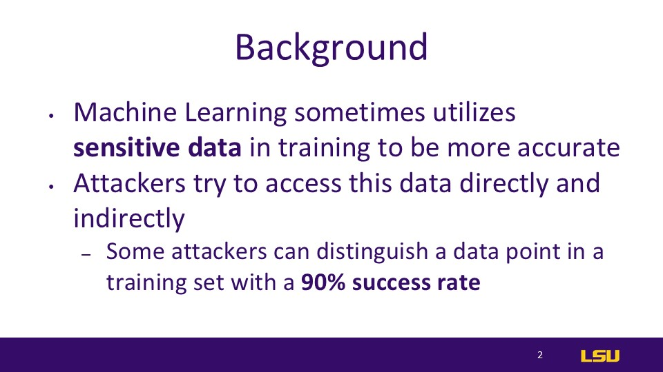
Machine learning data sometimes uses private or personal data in models. This is because the training background might contain some personal information. Therefore, privacy auditing is necessary. Privacy auditing is a process of evaluating and monitoring data privacy to ensure that personal or sensitive information is adequately protected during use, storage, and sharing. The presenter gave an example of personal data leakage: for instance, if a room button is trying to learn the layout of your house. Attackers may try to access this data by directly accessing documents, datasets, or through the methods he will discuss today.
Background Continued
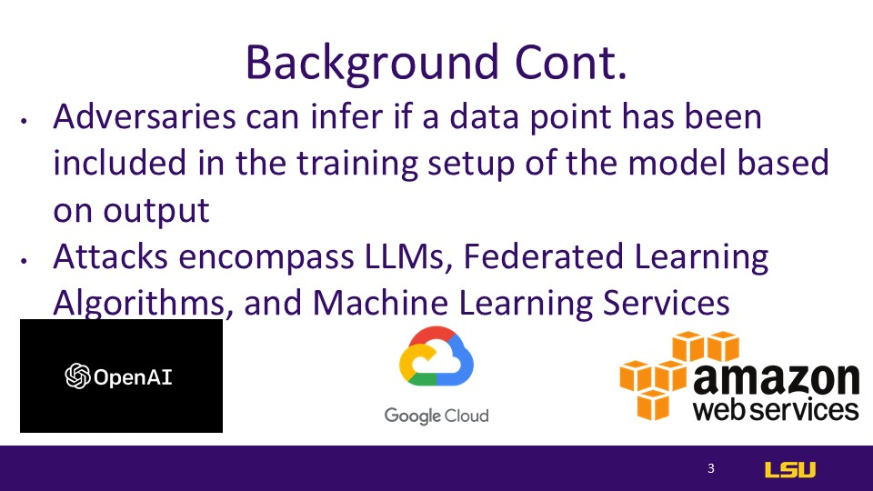
The method the presenter wants to discuss is the indirect method. Attackers can distinguish data points from datasets with a success rate of up to 90%, which is quite astonishing. Therefore, if an adversary can infer whether a data point is included in the training setup, we need to be extremely cautious. Many public machine learning services are vulnerable to this type of attack, such as large language models (LLMs), OpenAI, Google Cloud, and Amazon Web Services, where machine learning services are exposed to risks. Even federated learning algorithms, used by conglomerates like hospitals, face similar threats.
Neighboring Dataset Inference Attack
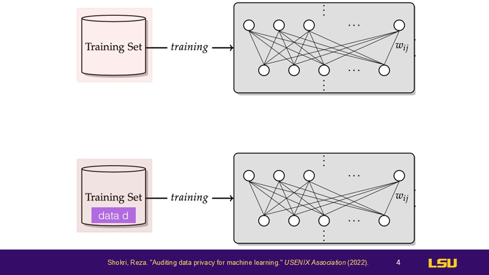
This image describes two training datasets: one is training set A, and the other is training set B. Training set B is a neighboring set of training set A, meaning they are the same datasets except for one differing data point. This is a very specific case, but in this type of attack, the attacker can identify this data point D because the model handles the differences between the original datasets in a distinct way. Therefore, by comparing the outputs of two models, it is possible to reverse-engineer the data point D from the training set.
Differential Privacy (DP)
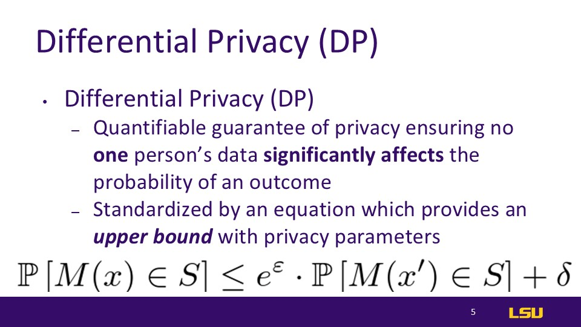
The presenter here explained the definition of differential privacy. Differential privacy is a quantifiable guarantee that one person's data will not significantly affect the output of a training model. This means that, in essence, it is somewhat like obfuscation and can actually be reduced to an optimization problem.This equation ont the slide gives us an upper bound Of how susceptible our privacy parameters are to leakage
Differential Privacy Continued
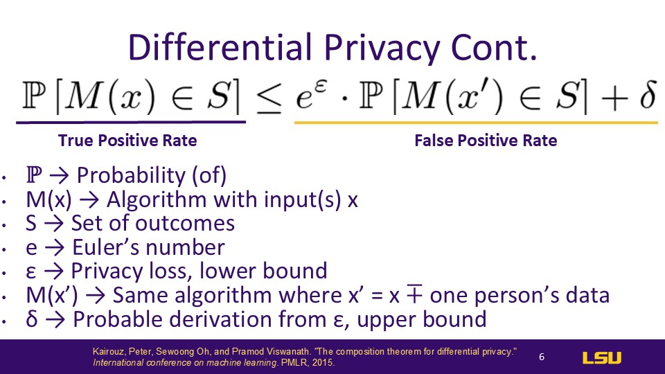
The two main parameters that the presenter primarily focused on are Epsilon and Delta. He made an effort to break down the equation as clearly as possible.
The choice of ε and Δ values is a critical decision in implementing Differential Privacy, impacting the effectiveness of privacy protection and the utility of the output.
What Is Privacy Auditing?

A quicker way to check if a machine learning algorithm is as tight as it may claim.Binary hypothesis testing. Given data set d0 or d1, after training, does it fall in an rejectable range R?
It's a method which simply tests the probability that a given item is or is not in the set of outcomes. It is derived from running M hundreds of times
Process of auditing is a membership inference attack.
Privacy Auditing Explained
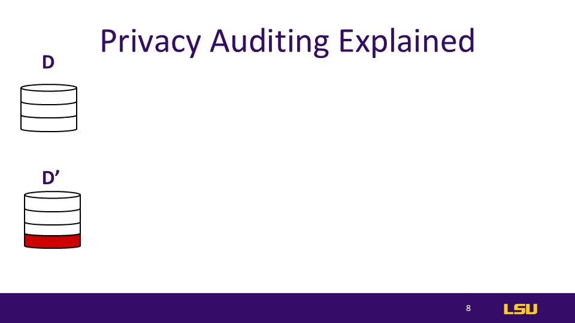
The dataset above has 3 elements, and the dataset below has 4 elements.
Privacy Auditing Explained
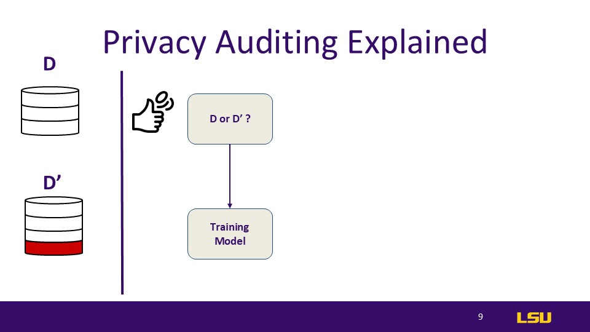
The auditor will flip a coin to determine whether a given element is in the model, in d, or in d'. So, it's completely random, but since the methods are optimizing, like Big O efficiency; they're just working on that optimization.It's like we're trying to find the worst case scenario
Privacy Auditing Explained
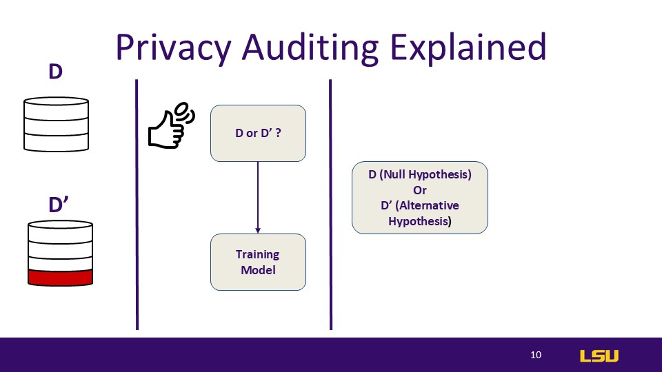
After flipping the coin, we review the randomly obtained dataset and confirm whether it supports the null hypothesis or the alternative hypothesis. We also need to verify whether this value exists in the new dataset.
Privacy Auditing Explained
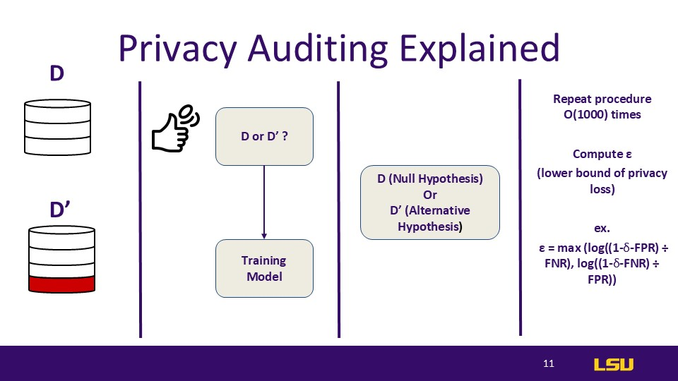
And then we repeat this process around 1,000 times. It's not a strict rule to do it exactly 1,000 times, but essentially, we keep running this process to see if, after each iteration and with each different dataset input into the training model, the results are the same. Are the weight values equal? Through this method, we calculate the lowercase Epsilon, which represents the lower bound of privacy loss.
Privacy Auditing
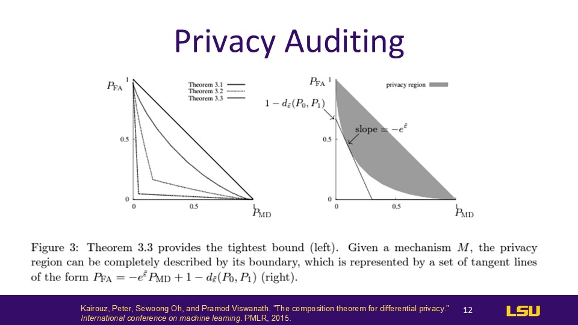
With these bounded calculations we can tell if an equation is correct by determining if the confidence interval is within our accepted privacy region. We use the bernoulli confidence interval to describe the boundaries which give the acception. Different designers have different levels of acceptance
This is also why such a large number of samples has been sought before, to better determine whether the results will fall within the boundaries
Privacy Auditing

Epsilon, which represents privacy loss, is set to 1, which is nearly the maximum value, and this is really bad. You can see how far we are from the ideal privacy range (the red area). However, if we adjust it to around 0.3, it now falls within a more acceptable range. So once we have a value that falls within this range, we can say that the value is tight enough.
Motivation
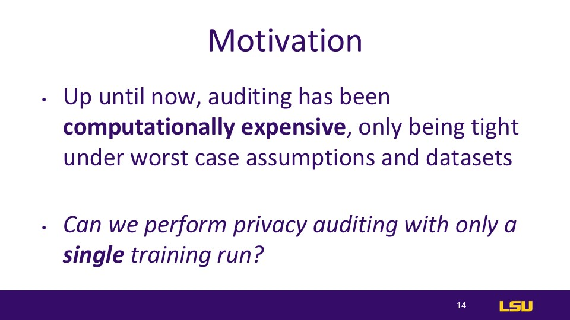
This is the motivation of this paper. We run this test thousands of times, and it happens during the training process, so none of the steps are quick or simple, especially with the depth of machine learning algorithms today. Is there a faster way? In other words, is there a way to conduct privacy auditing with just a single training run? The answer is yes.
Methods - Set Up
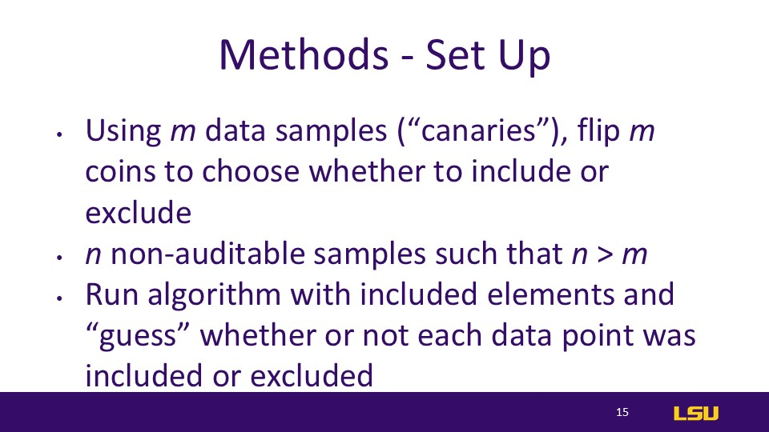
This slide describes the setup steps for conducting a privacy audit.
Using m data samples (“canaries”): The "canaries" refer to specific data samples that are subject to audit. You select m data samples for the analysis.
Flip m coins to choose whether to include or exclude these samples: By flipping m coins, you randomly decide whether each "canary" sample will be included in or excluded from the training model.
n non-auditable samples such that n > m: In addition to the m auditable "canary" samples, there are n non-auditable samples, where n is greater than m.
Run the algorithm with included elements and “guess” whether or not each data point was included or excluded: After running the algorithm with the chosen elements, the task is to "guess" whether each data point was included in or excluded from the dataset.
Methods - Set Up Continued
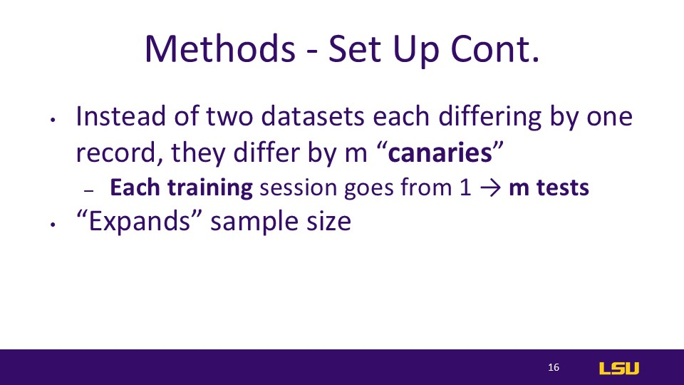
In traditional setups, privacy testing compares two datasets that differ by only one record. However, in this method, the difference between datasets is determined by m "canaries" (a set of data points used to test for privacy leakage). The method increases each training session from 1 test to m tests. In each training session, instead of conducting just one test, m tests are performed for each "canary." By testing m data points ("canaries") instead of just one, this method effectively expands the sample size, making the audit and privacy testing more comprehensive.
Methods - Set Up Continued
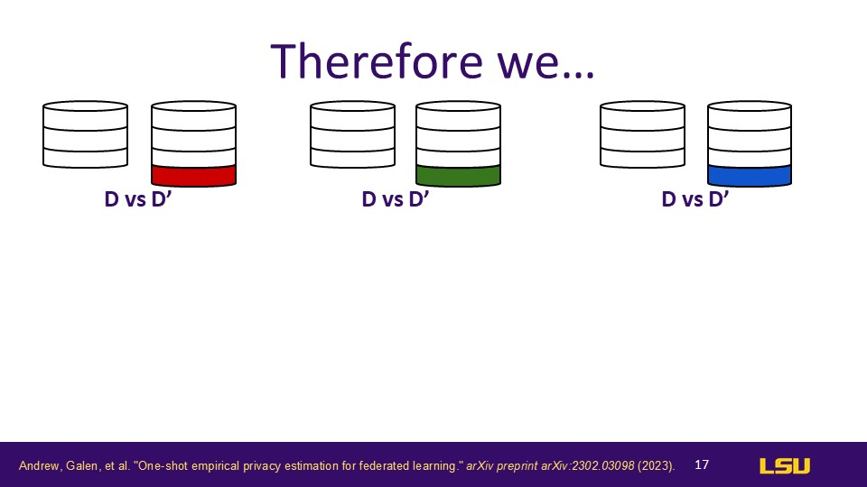
Only m (the canaries) is randomized, non-audited examples are always included
With m=n we get strongest auditing results, but typically n>m is better for computational efficiency. Also with too many canaries, the model may lose some “real”ness
Specifically, we guess that the examples with the k+ highest scores are included and the examples with the k‚àí lowest scores are excluded, and we abstain from guessing for the remaining m ‚àík+ ‚àík‚àí auditing examples; the setting of these parameters will depend on the application
Worst case DP algorithm auditing formalized by Stochastic dominance : Y dominates X if P[X>t] <= P[Y>t]
Therefore
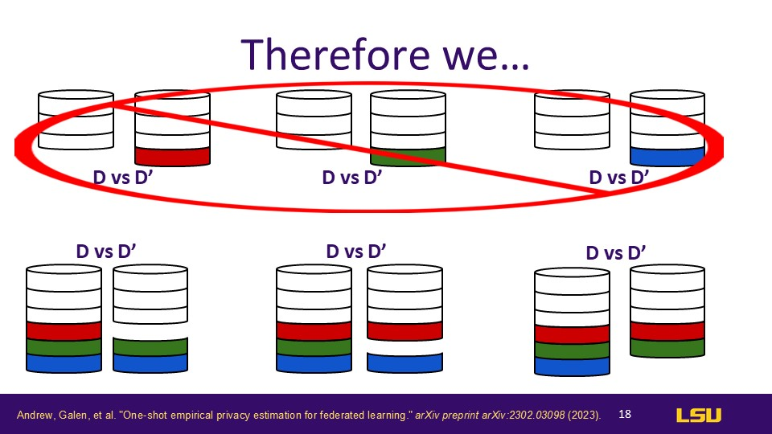
These comparisons are mainly achieved by introducing different numbers of "canaries," ranging from a single change to multiple changes, to test the model's privacy protection capabilities under different scenarios.
Method
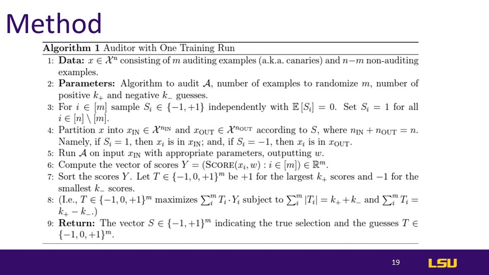
Make a set of Data X^n where not every example is audited
An algorithm A which randomizes m and can form positive and negative guesses. K+ tends to be included, k- is excluded
For a number i which is a subset of m, let sample outcomes be either -1 or +1 such that an expected net of 0 occurs. Set Si to 1 independently for a portion of the subset (which may include non audited examples)
Divide the members in half X
Score probability for each example, guessing whether the example is included based on the score. The scoring function is arbitrary and depends on the application (for black box, they use loss of the final model whereas for whitebox they use sum of the inner products of updates with clipped gradients of the loss on the example)
Sort scores. T is computed from Y as a “guess” at S. Y would normally be correlated with the true selection S, but if the correlation is too strong then it violates DP. Therefore T is computed from Y, such that the guesses T are a differentially private function of the true S, so this correlation will not be too accurate
Further, the T guesses can be IN, OUT, or Abstaining. Abstaining on uncertain examples ensures higher accuracy for the remaining guesses, yielding better audit results in practice
Return the “tightness” of the algorithm
For step 7, the post processing property of DP ( it's impossible to reverse the privacy protection provided by differential privacy by post-processing the data in some way)
The post-processing property means that it's always safe to perform arbitrary computations on the output of a differentially private mechanism - there's no danger of reversing the privacy protection the mechanism has provided. In particular, it's fine to perform post-processing that might reduce the noise or improve the signal in the mechanism's output (e.g. replacing negative results with zeros, for queries that shouldn't return negative results). In fact, many sophisticated differentially private algorithms make use of post-processing to reduce noise and improve the accuracy of their results.
The other implication of the post-processing property is that differential privacy provides resistance against privacy attacks based on auxiliary information. For example, the function g might contain auxiliary information about elements of the dataset, and attempt to perform a linkage attack using this information. The post-processing property says that such an attack is limited in its effectiveness by the privacy parameter ϵ, regardless of the auxiliary information contained in g.
Theoretical Analysis
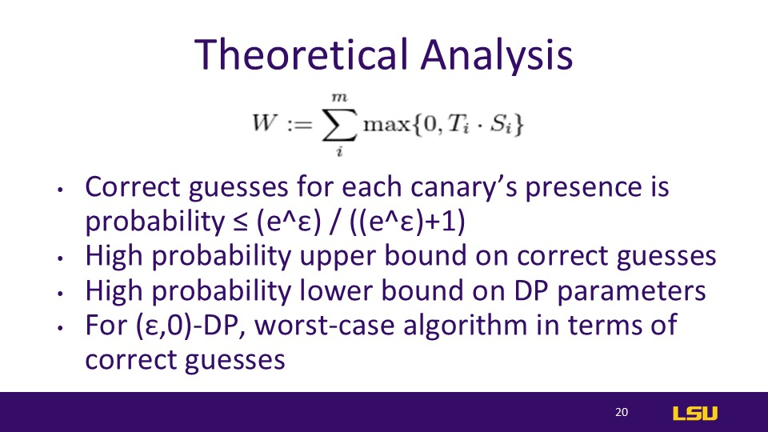
Equation ‚Üí S is uniform on {-1,+1}^m and T= M(S). If T_i and S_i disagree (guess is wrong), then max{0,T_i * S_i} = 0. If they agree, then max{0,T_i * S_i} = |T_i|
In other words, W increases proportionally to how much “weight” is placed on the guess when guessed correctly. Incorrect guesses do not increase W, but increase the baseline (). T may abstain from guessing which increases neither
The auditor seeks to maximize W in comparison to the baseline.
With no noise (ε,0)-DP, then an auditor can correctly guess whether each canary was included or excluded with probability ≤ (e^ε) / ((e^ε)+1) which follows a binomial distribution
S ‚àà {‚àí1,+1}m is uniform and T is a DP function of S (where distribution of S is conditioned on T = t)
With Bayes’ law, each correct guess has (e^ε) / (e^ε)+1 probability
Lower Bounds on Privacy Parameter ε: Theoretical and Empirical Comparisons
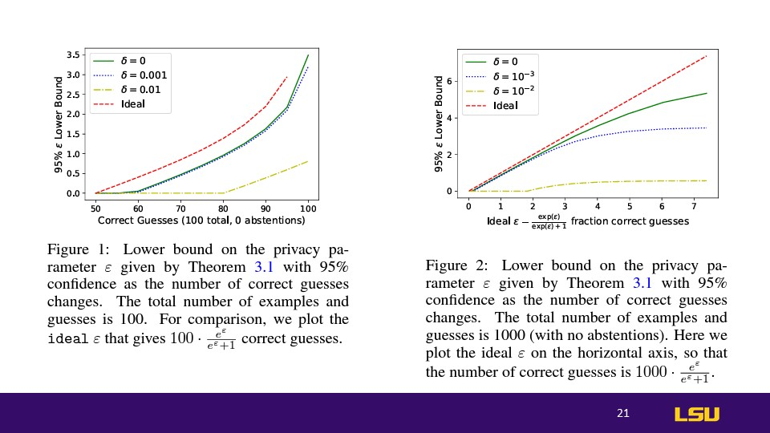
These two figures illustrate the relationship between the privacy parameter
ùúÄ and the lower bounds of confidence in predicting correct outcomes based on a theorem stated in the graphs.
Experiments
 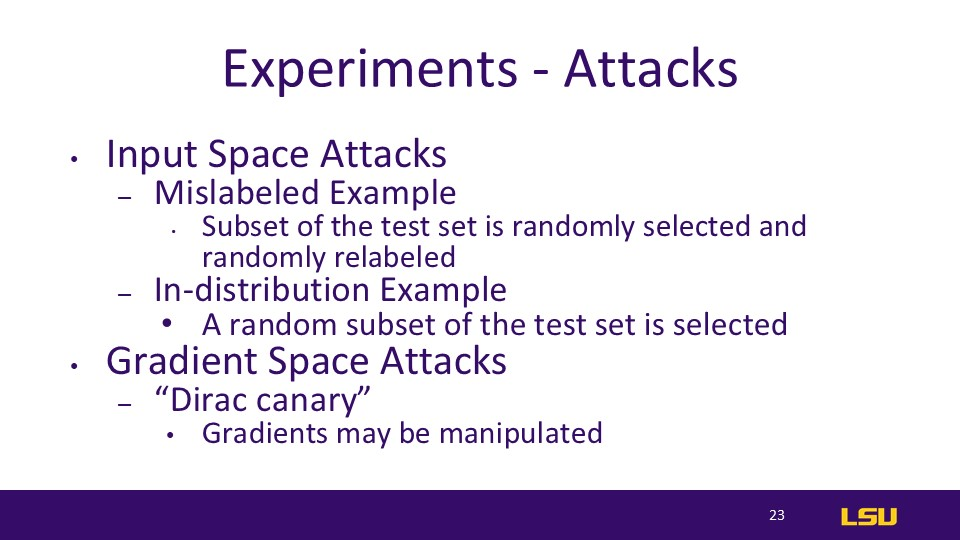
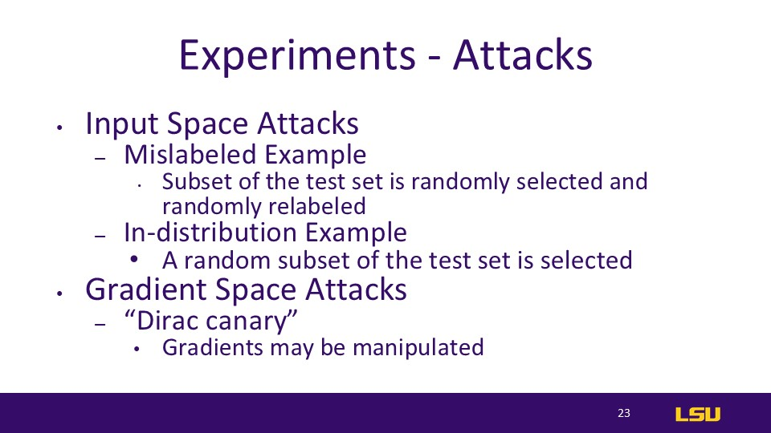
For input space audits, the loss of the input example is the score
For gradient space audits, scores are computed via the dot product between the gradient update and the auditing gradient
Input Space Attack
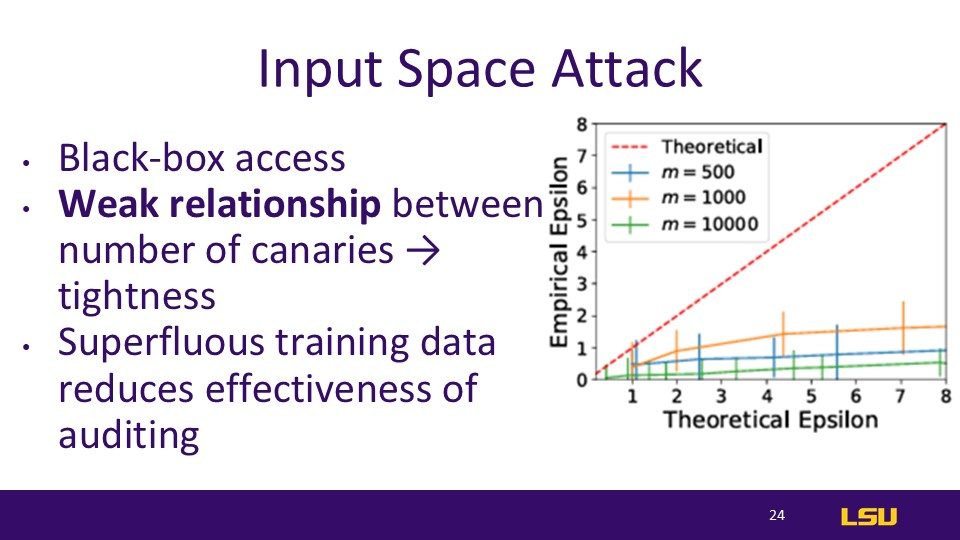
No relabel is the same as the original
Blackbox limits auditor to only insert actual images into the training procedure and can’t control the training aspects
Input Space attacks are the weakest, Dirac Canary is the strongest
When the auditing examples are low ‚Üí not enough observations to have high confidence lower bounds for epsilon
When the number of auditing examples are high → model cannot “memorize” all of the examples, reducing the tightness of the auditing
Adding the superfluous training data might affect the model because of a loose theoretical analysis or the weakness of the blackbox attacks
Dirac Canary Attack
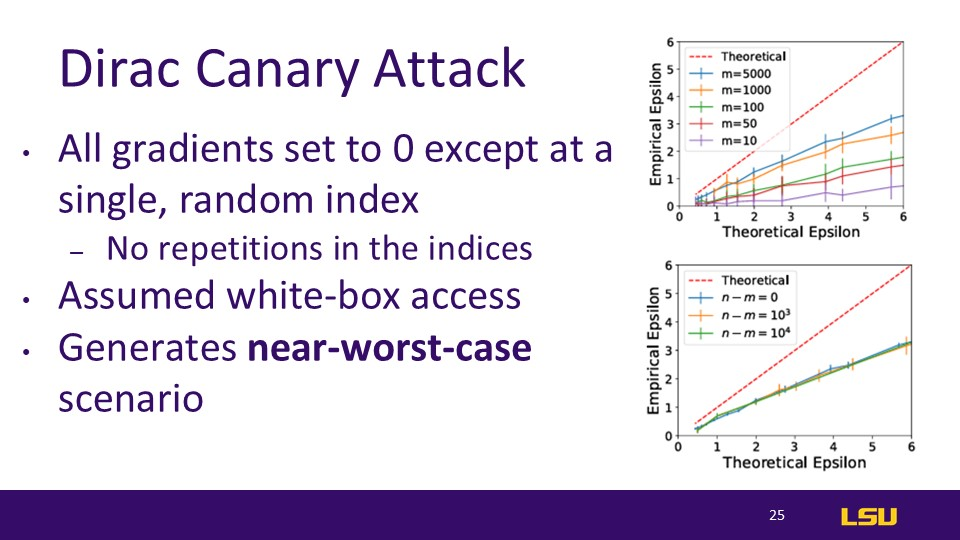
With assumed whitebox access, the auditor can insert examples with arbitrary gradients into the training procedure. This means in a non-DP system that the output of the model could drastically change depending on the added example
Figure 4 ‚Üí more examples tested means tighter auditing, but impact diminishes
Figure 5 ‚Üí more non-auditing examples seems to have no effect on the auditing. Perhaps because the gradient attacks can generate near-worst-case datasets
The number of iterations in DP-SGD may affect audit results, but their tests did not follow this line of thinking
Dirac Canary Attack
 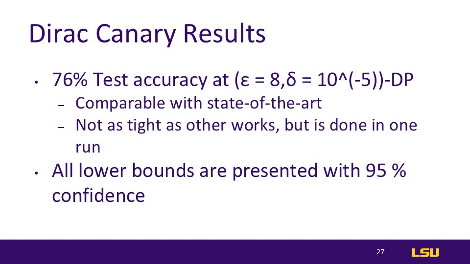
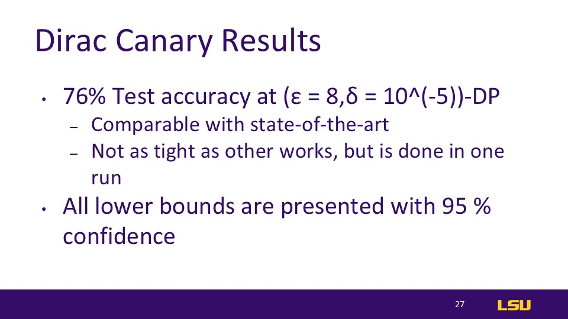
We refer to the setting where the adversary has access to all intermediate steps as “white-box” and when the adversary can only see the last iteration as “black-box.” We experiment with both settings.
Results and Contributions
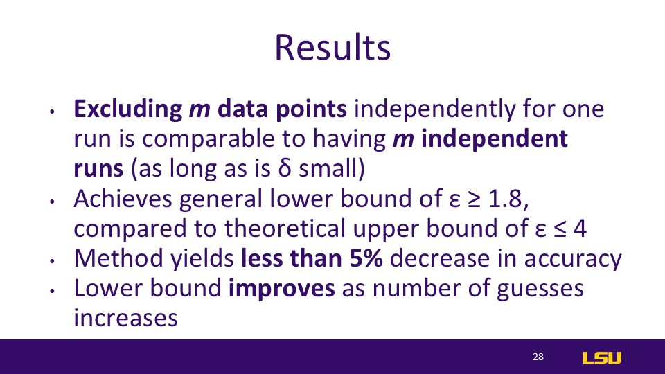
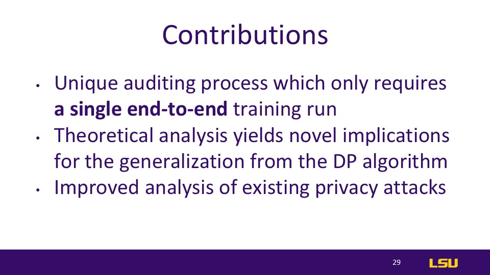
For bounding stuff (white-box setting)
5% decrease in accuracy is pretty good by ML standards
Limitations
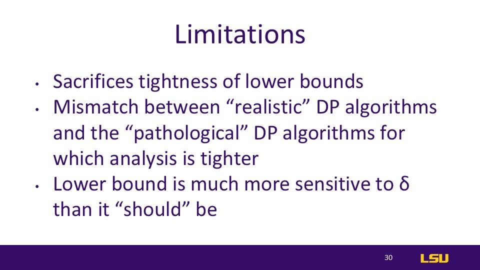
Feed-forward networks expand the dimensionality of the input and introduce non-linearity through the ReLU activation function.
This allows for a more refined representation of the tokens and their relationships.
Applications
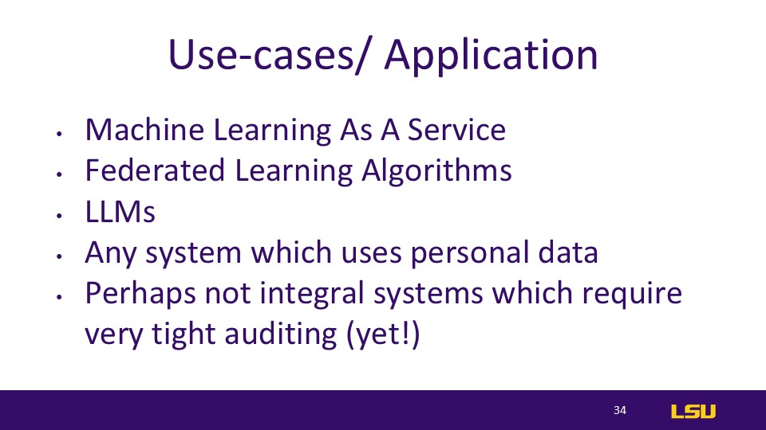
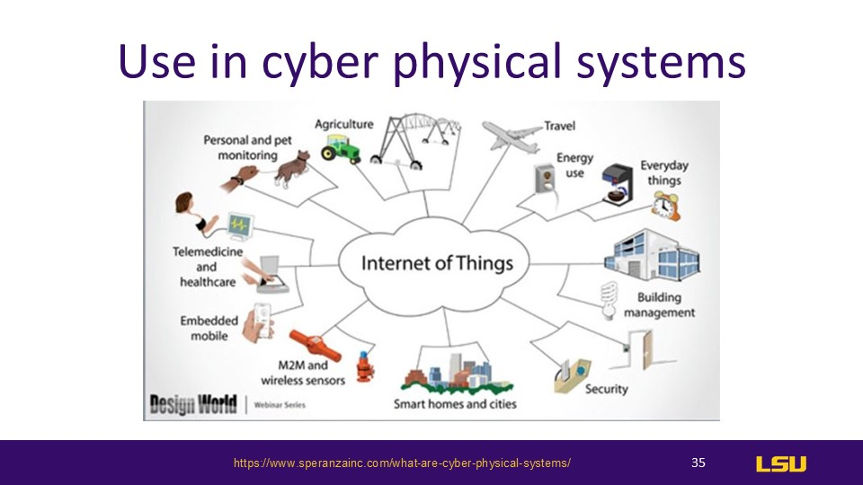
There are many applications in CPS, like self driving cars, like in Tesla's database for the recording your performance.
like browsers, also pose privacy risks. They emphasized the wide applicability of these issues and expressed appreciation for the paper’s insights.
One group discussed concerns about personal data privacy in systems like self-driving cars.
They pointed out that data collected, such as driving routes from Tesla, could be used to track personal information.
Group 6 highlighted the issue of health data privacy, noting that even with anonymization techniques used by hospitals,
combining data into large databases could still allow tracing back to individuals or institutions.
Discussions
Discussion 1: What are some ways to solve the aforementioned limitations?
The presenter proposed the need to reconcile these limitations by improving how noise is implemented in the algorithms to effectively obscure data.
For example, improving how noise is introduced to ensure it effectively obfuscates data and provides better privacy guarantees.
Group 4 suggested that part of the issue might be related to the Bayesian and binomial distributions used for introducing randomness,
indicating that there might be a mismatch between the theoretical models and practical implementations‚Äã
Discussion 2: Do you think this paper's process justifies the loss in quality?
Is there a better avenue to approaching auditing?
Group 8 acknowledged the importance of speed improvements in privacy auditing, especially for organizations with fewer resources.
They argued that speed is a critical factor, especially for organizations with limited computational resources.
In many cases, faster privacy audits enable more organizations to ensure privacy, even if the precision is lower.
This can be particularly valuable for organizations that don't have the resources of tech giants like Amazon or Google.
For instance, smaller companies or projects may not have the computational power to run thousands of privacy audits, making this faster approach more feasible.
The presenter agreed that while trade-offs exist, optimizing this method for smaller systems could be beneficial, and future work should aim to improve both precision and speed.
Group 9 added that different scenarios might require different approaches.
Some situations may require fast, less accurate audits, while others might need slower,
more precise results. It's a "bleeding-edge" field, and future optimizations may provide better accuracy without sacrificing speed‚Äã.
Questions
Q1: Why Not Use Standard Epsilon (ε) System for Auditing?
The presenter explained that while the system calculates ε, the paper’s approach is more focused on practical,
empirical estimates of privacy rather than tightly defined theoretical guarantees.
The epsilon values were derived from actual training runs, and while this introduces some imprecision,
it is computationally efficient and suited for large-scale systems‚Äã‚Äã
Q2: How Was Noise Introduced in the Auditing System?
The presenter responded that noise is added through gradient clipping, a standard practice in differentially private training methods.
However, the choice of noise levels (δ) was somewhat arbitrary, relying on trial and error.
The authors of the paper used δ = 10⁻⁵ in their experiments, which they admit introduces some imprecision,
especially when δ becomes a critical factor in determining the tightness of privacy bounds ​
Q3: Why Use a Flat Noise Value instead of making it relative to probability?
The presenter agreed that a relative noise value might improve the results, but the paper’s method was designed for simplicity and computational efficiency.
The current approach worked reasonably well, but they acknowledged that future work could explore optimizing the noise values based on system-specific characteristics‚Äã.
{kind=link}
{kind=link}
{kind=link}
{kind=link}
{kind=link}
{kind=link}
{kind=link}
{kind=link}
{kind=link}
{kind=link}
{kind=link}
{kind=link}
{kind=link}
{kind=link}
{kind=link}
{kind=link}
{kind=link}
{kind=link}
{kind=link}
{kind=link}
{kind=link}
{kind=link}
{kind=link}
{kind=link}
{kind=link}
{kind=link}
{kind=link}